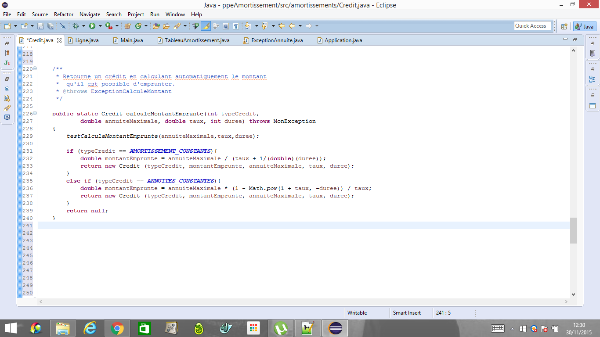
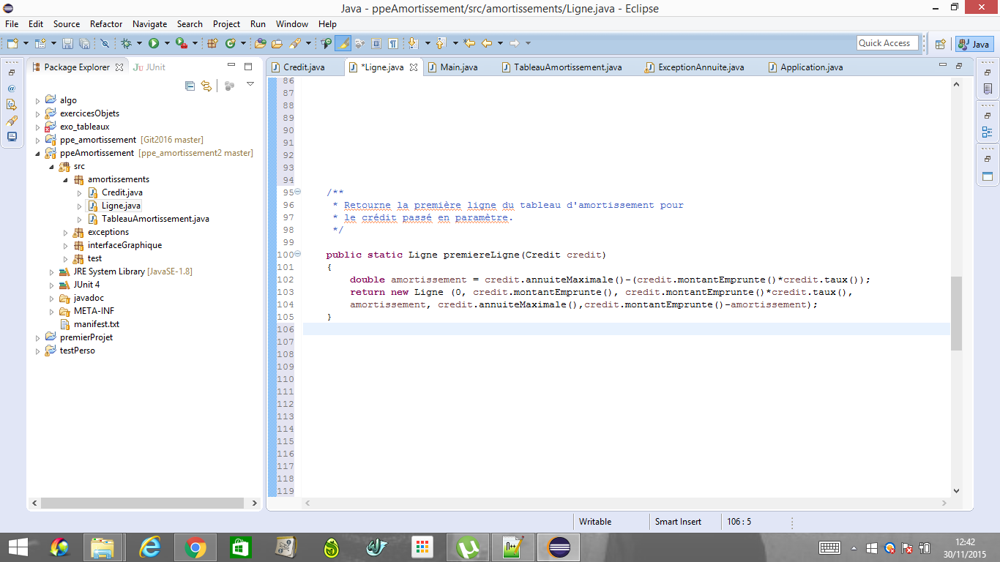
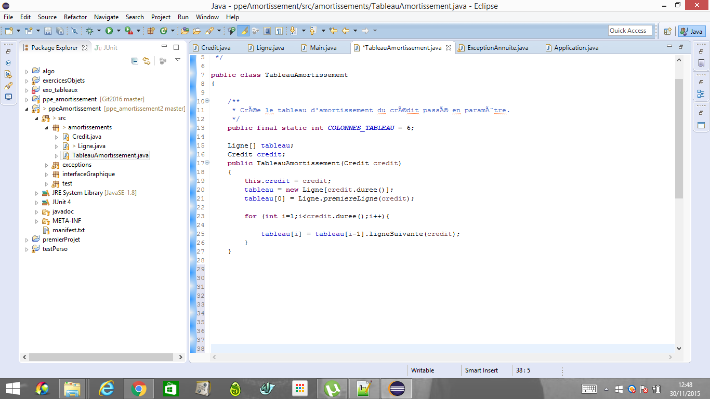
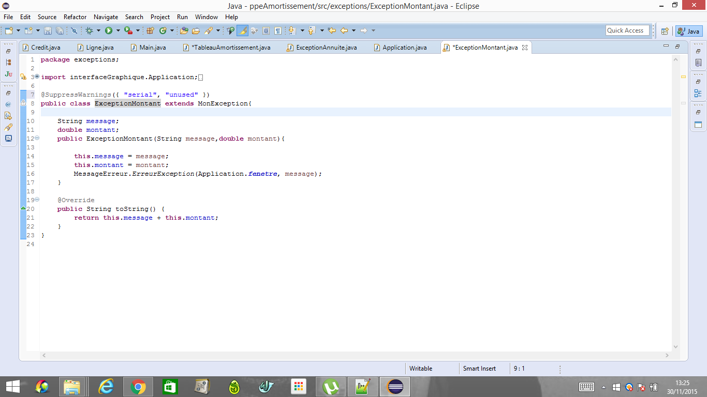
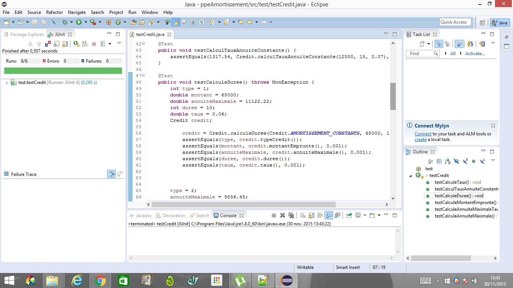

Application Java
Contexte Solution proposée Structure de l'application Conclusion Compétences validées Javadoc DocumentationUtilisateurLes amortissements des crédits sont difficile à choisir car la procédure de calcul est complexe et on se perd vite dans les chiffres. Il a été décidé de mettre au service du département comptable un outil interactif permettant d’y voir clair dans les crédits et de prendre des décisions rapides.
Il existe deux modes de remboursement pour les crédits : les crédits à "amortissements constants" ou bien à "annuités constantes". Pour chacun d’eux, les modalités du crédit sont spécifiées par ces critères :
La connaissance de 3 de ces critères permettent de déduire le 4-ème. Si par exemple, un utilisateur saisit le taux, la durée et le montant de l'annuité, il est possible de calculer le montant qu’il peut emprunter.
Application exclusivement codée en langage Java
Afin de répondre aux attentes du client, nous avons crée une application Java permettant à un utilisateur de :
Les fonctions de calculs permettent de :
L'application est architecturée autour de 4 packages qui sont :
Package amortissements
Package exceptions
Package interfaceGraphique
Package test
La classe Crédit est la classe dans laquelle le Crédit va être construit. Le constructeur ne peut être appelé directement, il faut alors passé par des "fabriques". Le rôle d'une fabrique est de, à partir de 3 valeurs parmis les 4 nécessaires, calculer la 4ème puis créer le crédit.
Voici un exemple avec la fabrique permettant de calculer le montant emprunté :
La classe Ligne permet, à partir d'un crédit donné, de créer les lignes du tableau d'amortissement.
Elle possède une fonction premiereLigne() permettant de créer la premiere ligne, puis une fonction ligneSuivante() qui va créer à chaque fois la ligne suivant la précédente.
Voici la fonction premiereLigne() :
La classe TableauAmortissement va être la clef de voûte de ce package. A partir d'un crédit, la classe va alors créer un tableau, comportant toutes les lignes de ce Crédit. Cahque case du tableau correspondra à une ligne du crédit, Il y aura ainsi autant de cases que d'années nécessaires au remboursement du crédit
Voici son constructeur :
Le package exceptions rassemble toutes les classes nécessaires à la levée d'exception lors de l'éxécution du code.
La classe MonException est une classe vide qui hérite de la classe java Exception. Nous trouvons ensuite 4 classes spécifiques qui héritent elles-même de MonException :
Chacune de ces exceptions est relevée dans un cas bien précis, de telle sorte que l'utilisateur puisse avoir plus de précision sur la nature de l'erreur !
Avoir une classe mère commune à ces 4 exceptions telle que MonException permet de ne relever qu'un seul "type" d'erreur à chaque fois, mais qui peut correspondre aux 4 citées ci-dessus.
Voici un exemple avec l'exception ExceptionMontant :
Le package interfaceGraphique est composé de 5classes permettant ainsi de réaliser l'ensemble des opérations nécessaires à l'affichage du tableau.
Permet de lancer la fenêtre de l'application.
Permet de gérer les évènements des boutons de l'application.
Permet la sauvegarde du tableau dans un fichier Excell sur l'ordinateur de l'utilisateur.
Permet de dimensionner et construire la fenêtre appelée par Applcation.
lLorsqu'une exception est levée, elle demande à cette classe d'afficher un message d'erreur informant l'utilisateur de celle-ci.
Le package test rassemble l'ensemble des test unitaires éffectués en 3 classes :
Junit a été utilisé afin de tester au mieux les différentes fonctions de l'application.
Voici un exemple de test concluant réalisé dans la classe TestCredit :

| Intitulés | Compétences |
|---|---|
| A1.1.1 | Analyse du cahier des charges d'un service à produire |
| A1.1.2 | Étude de l'impact de l'intégration d'un service sur le système informatique |
| A1.1.3 | Étude des exigences liées à la qualité attendue d'un service |
| A1.2.3 | Évaluation des risques liés à l'utilisation d'un service |
| A1.2.4 | Détermination des tests nécessaires à la validation d'un service |
| A1.3.2 | Définition des éléments nécessaires à la continuité d'un service |
| A1.4.1 | Définition des niveaux d'habilitation associés à un service |
| A2.1.1 | Accompagnement des utilisateurs dans la prise en main d'un service |
| 4.1.1 | Proposition d'une solution applicative |
| 4.1.2 | Conception ou adaptation de l'interface utilisateur d'une solution applicative |
| A4.1.4 | Définition des caractéristiques d'une solution applicative |
| A4.1.6 | Gestion d'environnements de développement et de test |
| A4.1.9 | Rédaction d'une documentation technique |
| A4.1.10 | Rédaction d'une documentation d'utilisation |